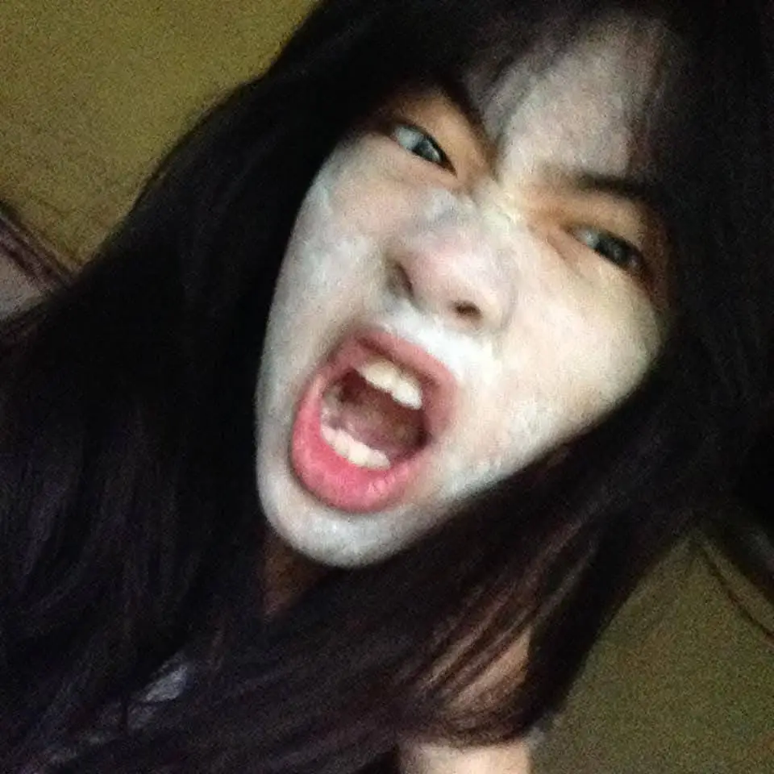

My Dearest Samantha:)
This is for your August 1st gift from your broke ahh Friend, JayJay.
I know this isn't a lot but like this is what I can give for now:) So I just wanna like express why you've been a good friend of mine throughout our friendship lol.
Diba rawr kaayo sa bg? HAHAHAHAHHAHAHA, anyways, so like throughout our friendship gali? what I noticed is that you're a really, really sigma.
and I myself mean it lol. btw bro mag binisaya sa ta dire HAHAHHHAAHAH, btw bro dw about your embarassing moments nimo cause I don't really mind naman bro.
Even I sad naa sad ko nuh? why would I judge you for your mistakes when I myself kay maka mistake sad... and bro usahay ba kay ganahan unta ko nga di ko ma kulbaan when you dool2 me yk? HAHAHAHAH
idk but like I wish that you would never, EVER, do something bad in your life and ik that you already did but like pls do NOT do it again.
like when you try to hurt yourself or when you blame urself too much, pls stop that kay tbh nasasaktan din ako:(,
fr fr ion wanna lose you bro. back to the topic, so as you as my friend, I'm really glad that you're still here with me lol like bro I tried to pull away to remove myself in ur life kay distraction ra kaayo ko like ga samok2 rako ay tbh,
mao I's sorry bai when I did that in tpast like pareha ato pag last vacay mao man to akong ghe buhat gyud but like every day gali? every day ma feel gyud nako nga guilty kaayo ko,
like bro di ko ganahan nga naa koy nabuhat nga di gyud nako gusto but if i have to? if it is for the better good? then yeah but Therefore I tell you, at that time I don't really know what I was trying to do, I almost ended our Friendship bai mao me sorry and I apologize.
and bro btw I hope nga managad lang ghe hapon ka if ever life puts us nga busy kaayo and kana gali like dili na kaayo ta mag tabi? pls don't leave meT0T (weeehhh ka oa).
but fr you're actually one of my close friends now,
there's now 5 of you to me and ion wanna lose any of you if ever life pull us away from each other kay bro I can't ask for a better friend,
sure having rich, popular, cool, or whatever friends out there but like there's just flaws, yk?
but a real friend like you , sus ayaw ka wagtangT0T, you guys cheered me up, like bro you guys genuinely the ones that bring me joy(awwwwww)
you guys are always there and open to me but like I hope you'll be gentle to urself when life is being difficult.
damn bro this is actually just like a letter lol, btw bro Mingaw ko niya.
Imma be honest with her bro, she's my inspiration sa pag tarong sa akong education kay bro gwapa kaayo og bright akong na ibgan nya ako? sus HAHAHAHHAHA dumbahh pa sa dumbahh
SHET SHET NAKITA AKO